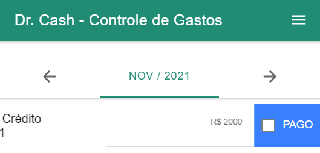
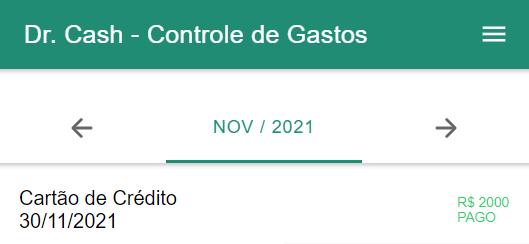
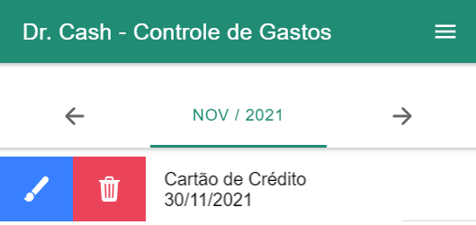

<ion-content>
  <ion-slides pager="true">
    <ion-slide>
      
      <h3>Bem vindo!</h3>
      <p>
        Seja bem vindo ao app Foco! O assistente financeiro virtual que vai te
        ajudar a poupar e colocar suas finanças em ordem.
      </p>
    </ion-slide>
    <ion-slide>
      
      <h3>Primeiros passos</h3>
      <p>
        Antes de iniciar sua jornada, vamos aprender um pouco mais sobre a
        usabilidade do app?
      </p>
    </ion-slide>
    <ion-slide>
      
      <h3>Cadastrar uma despesa</h3>
      <p>
        Para cadastrar uma nova despesa basta clicar no sinal de +, no canto
        inferior direito da tela, rápido e prático!
      </p>
    </ion-slide>
    <ion-slide>
      
      
      <h3>Marcar despesa como paga</h3>
      <p>
        Para marcar uma despesa com o status de paga, basta arrastá-la para o
        lado esquerdo e marcar a opção pago
      </p>
    </ion-slide>
    <ion-slide>
      
      <h3>Editar / Excluir despesa</h3>
      <p>
        Para editar as informações ou excluir uma despessa basta arrasta-lá para
        o lado direito
      </p>
    </ion-slide>
    <ion-slide>
      
      <h3>Finalizado!</h3>
      <p>
        Agora que você está por dentro de todas nossas funções, vamos começar a
        cuidar da sua vida financeira!
      </p>
      <ion-button [routerLink]="['/home']" class="vamosNessaBtn"
        >BORA!</ion-button
      >
    </ion-slide>
  </ion-slides>
</ion-content>
